1: Le fabuleux destin d'Amélie Poulain - 2001
2: Pierrot le fou - 1965
3: Amour - 2012
4: Le scaphandre et le papillon - 2007
5: Les triplettes de Belleville - 2009
La pop culture américaine est très bien représentée.
C'est cependant à notre grande surprise qu'on n'y retrouve pas des chef-d'oeuvres tels que Star Wars ou Camping 2 (RIP Franck).
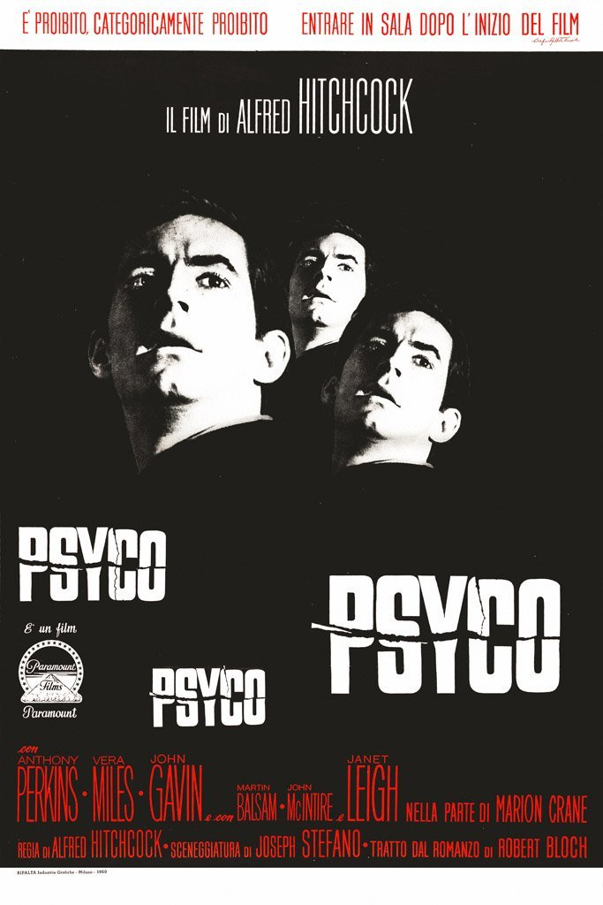
 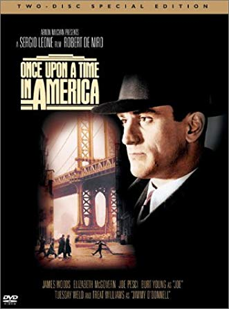
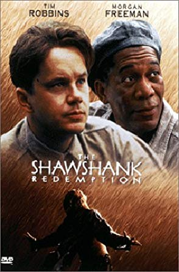
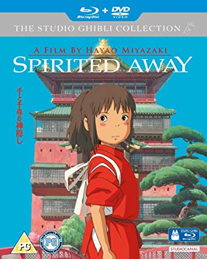
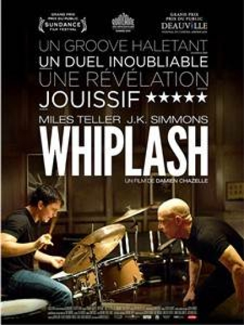
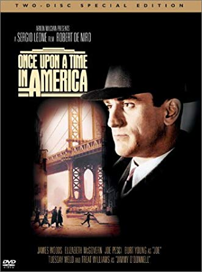
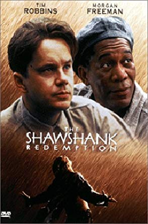
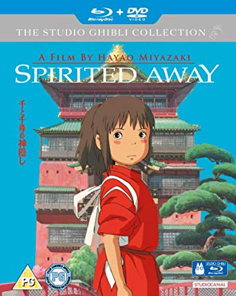
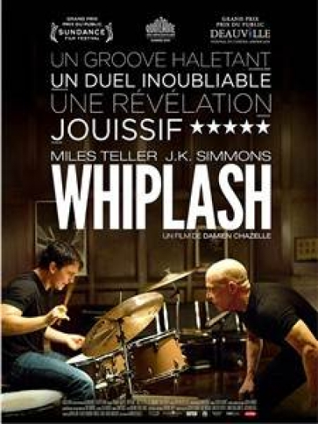
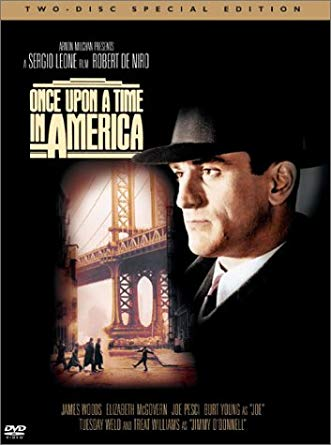
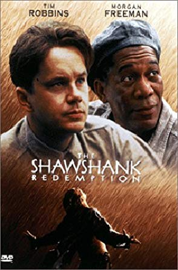
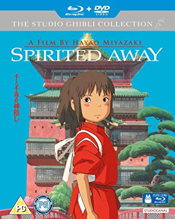
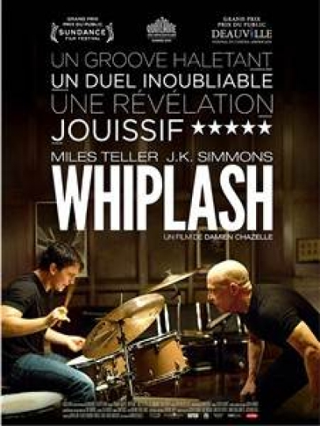
La France est aussi inexistante que les mélodies de PNL et désolée pour les millénials, le premier Pokémon est inexistant...
Masochistes, on a aussi pensé à vous ! Voici cinq bon vieux nanards des familles.
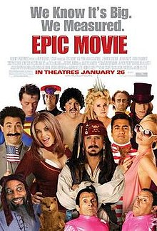
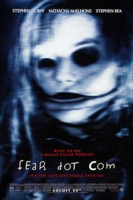
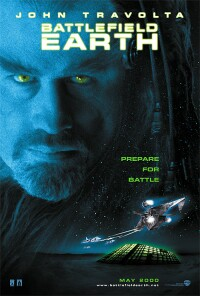
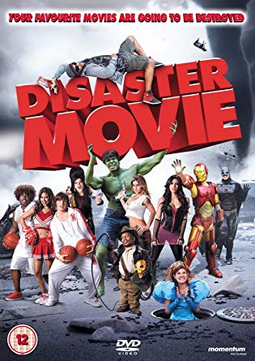
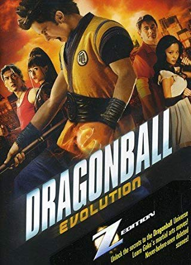
Parlons en ! On retrouve 2 films de la même saga epic et disaster movie. Le réalisateur doit surement tourner ses films sous substances illicites. On a aussi le gros bide Battlefield earth où le scénario a probablement été écris par la grande section de l'école élémentaire Dallas. Pour courroner le tout, l'ultra célèbre DragonBall Evolution ! Pour l'avoir maté, cependant l'expérience peut devenir amusante si vous prenez un bon shot de vodka pour chaque destruction d'enfance que ce film procure. Il sera même possible que vous trouviez la fin agréable.
Passe ta souris sur le pays de ton choix ! Pour chaque country, tu découvrira le Top 5 des meilleures productions.
1: The Shawshank Redemption - 1994
2: The Godfather - 1972
3: Schindler's List - 1993
4: Whiplash - 2014
5: Pulp Fiction - 1994
2: The Godfather - 1972
3: Schindler's List - 1993
4: Whiplash - 2014
5: Pulp Fiction - 1994
1: The Dark Knight - 2008
2: Inception - 2010
3: The Imittation Game - 2014
4: doctor strangelove or how i learned to stop worrying and love the bomb - 1964
5: The Grand Budapest Hotel - 2014
2: Inception - 2010
3: The Imittation Game - 2014
4: doctor strangelove or how i learned to stop worrying and love the bomb - 1964
5: The Grand Budapest Hotel - 2014
1: Das Boot - 1981
2: The lives of others - 2006
3: Pandora's Box - 1929
4: Das the wave - 2008
5: Good bye Lenin ! - 2003
2: The lives of others - 2006
3: Pandora's Box - 1929
4: Das the wave - 2008
5: Good bye Lenin ! - 2003
Non tous les films français ne sont pas nuls, mate polisse ou le pianiste, tu vas bien pleurer.
Du coté des rikains, obliger de regarder les évadés ou encore le parrain histoire de te prendre pour un petit mafieux derrière ton ordi.
Si t’es porté par le pays du sirop d’érables ou un gros fan de l’univers et des étoiles, mates interstellar.
Les English sont pas mal en science fiction et en action.
Regardez the dark knight rises et inception les gars. Gros débat en perspective sur la fin d’inception.
Ne nous embêtez pas avec des demandes de films indépendents tchécoslovaques ou indou-hongrois
avec des cowboys qui mange du pudding car on a pas ça en stock.
1: A fistful of dollars - 1964
2: The great beauty - 2013
3: Loose Cannons - 2010
4: To Rome with love - 2012
5: Swept away - 2002
2: The great beauty - 2013
3: Loose Cannons - 2010
4: To Rome with love - 2012
5: Swept away - 2002
1: Pan's Labyrinth - 2006
2: Hidden Away - 2014
3: Volver - 2006
4: The Orphanage - 2007
5: Sleep Tight - 2011
2: Hidden Away - 2014
3: Volver - 2006
4: The Orphanage - 2007
5: Sleep Tight - 2011
1: The Game - 1997
2: The lady from Shangai - 1947
3: The Legend of Drunken Master - 1994
4: Kung fu Hustle - 2004
5: Big Trouble in Litle China - 1986
2: The lady from Shangai - 1947
3: The Legend of Drunken Master - 1994
4: Kung fu Hustle - 2004
5: Big Trouble in Litle China - 1986
1: Spirited Away - 2001
2: Howl's Moving Castle - 1991
3: Princess Mononoke - 1997
Seven Samurai - 1954
5: Akira - 1988
2: Howl's Moving Castle - 1991
3: Princess Mononoke - 1997
Seven Samurai - 1954
5: Akira - 1988
T’as envie de connaitre plus de mots italien que « Pasta » et « Panzani », regarde pour une poignée de Dollars avec Monsieur Clint Eastwood.
Hola, que tal ? le Labyrinthe de Pan ou encore Volver d’almodovar sont des buenos films pour te croire méditerranéen.
Si t’es un gros fan des arts-martiaux, direction la Chine pour mater le maître chinois ou Crazy Kung-Fu.
Le pays des sumos et des mangas dégomme tout sur son passages en films d’animation. Regarde des chefs d'oeuvres comme Château Ambulant ou le Voyage de Chihiro.
Malgré tout, sachez que tous ces petits (gros) pays font aussi des grosses bouses...
Répartition des 1000 films les plus nazes par pays
Et le pays du caca gagnant est :
LES STATES
.
Ok, les rikains ont Tarantino, Brad pitt, DiCaprio mais ils sont aussi champion des gros navets. On vous jure qu'à coté le film d'Aladdin
avec Kev Adams en deviendrai presque alléchant à coté.
Donc, faites gaffes les gars ! Les states ce n’est pas forcément la qualité garantie !
Franck Dubosc est-il indispensable au réalisateur ? Ou encore Jean Claude Van Damme ?
On vous propose le top 5 des meilleurs acteurs et actrices avec les films dans lesquels ils envoient du lourd !
Le grand winner chez les homme est l'excellentissime Ian Mckellen connu pour la trilogie du seigneur des anneaux dans le rôle de Gandalf le gris (ou le blanc).
Sean Connery envoie du lourd avec les incorruptibles, film de mafieux ou aux côtés d'Harisson Ford dans Indiana Jones et la dernière croisade.
Sean Connery envoie du lourd avec les incorruptibles, film de mafieux ou aux côtés d'Harisson Ford dans Indiana Jones et la dernière croisade.
Tom Hanks est làààààà. Tu vas te rendre compte de la puissance de l'acteur en matant Forest Gump et tu sauras enfin pourquoi tout le monde dit "Cours Forest, cours".
Pour améliorer ta petite culturue générale, admire Robert Redford dans l'Arnaque.
Pour les actrices, la Numéro Uno est la si belle, charmante et talentueuse Jessica Chestain.
Attention on va pas critiquer ce top car Cocorico une française arrive en seconde place ! Julie Delpy .
C'est aussi une réalisatrice de qualité qui sait raconter des vraies stories et faire battre ton petit coeur.
Parmi cette belle brochette de diva, on a Olivia Williams célèbre pour son rôle dans Sixième Sens.
Dans l'adaption du roman de Scott Fitzgerald, Carrey Mulligan sublime l'écran avec son intérpréttion de Daisy Buchanan au coté de DiCaprio
Bernard
Diplomé d'un master en copier/coller à l'université de la Chapelle-Sous Bois II. Ce jeune célibataire à la recherche de l'âme soeur est informaticien-balayeur dans un fast-food connu qui commence par un M et finit par un O mais pour lequel on ne dira pas le nom par soucis de droit d 'auteur. Il aime Patrick Sebastien, l'ultimate et les vendredi où il fait 20 degré celsus.
Clerc
C'est la datastorytelleuse de l'équipe. Elle adore raconter des histoires, notamment on se souvient tous de la fois où elle a conté l'histoire des 3 petits cochons au camping de saint malo. Enzo le beau brun de 25 ans, n'est pas resté insensible à cette romance et lui demanda sa main, cependent Clerc déclina cette proposition afin de poursuivre son rêve de toujours: dresser des lamas chasseur de gambas.
Tangi
C'est une spécialité culinaire de Douarnenez en Bretagne. Il s'agit d'une pâtisserie-boulangère : en breton, kouign signifiant « pain-doux » et amann, « beurre ». Elle aurait été inventée par hasard vers 1860 par un boulanger douarneniste : Yves-René Scordia. Il faut 200g de beurre et de sucre pour un Kouign Amann